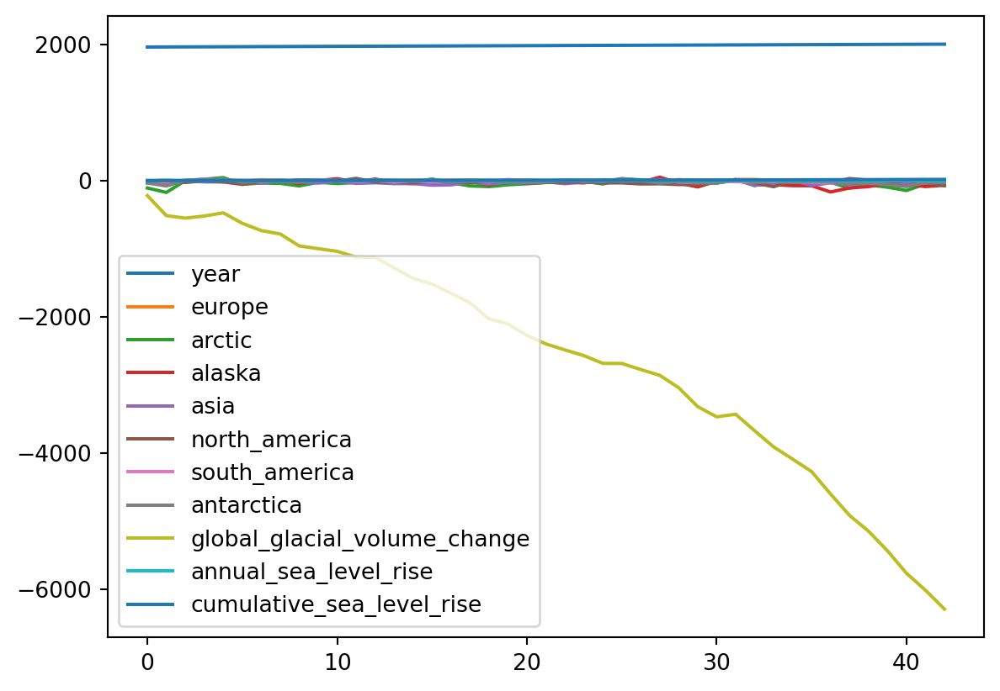
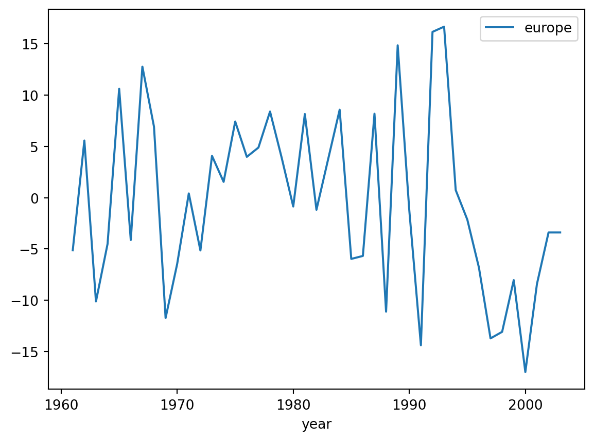
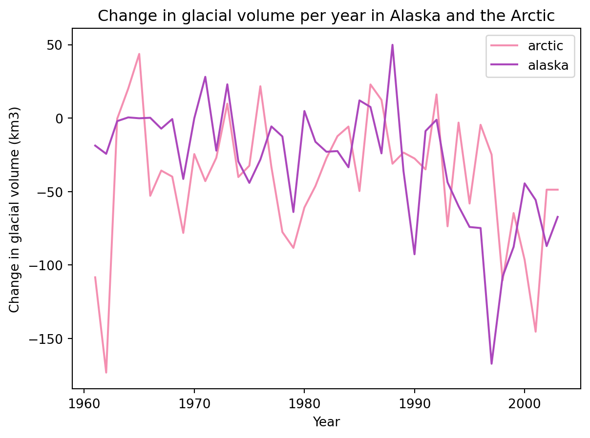
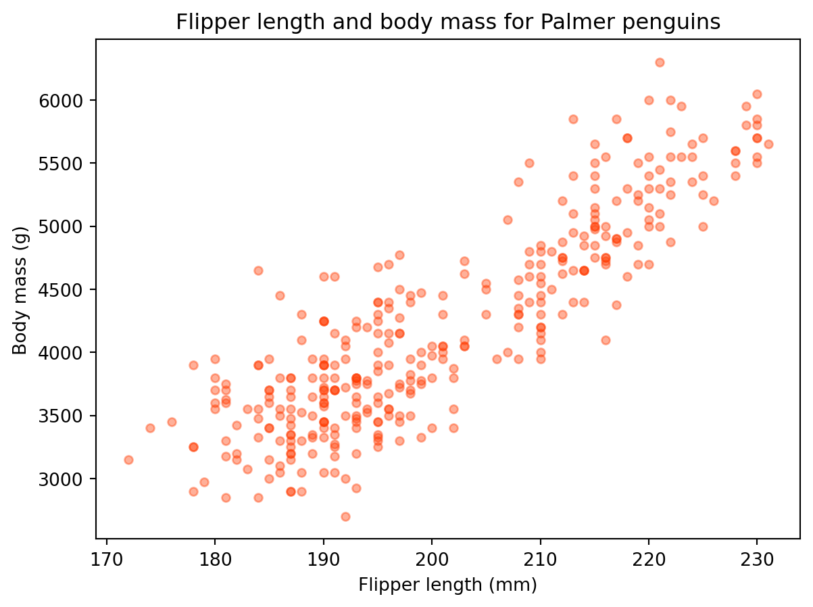
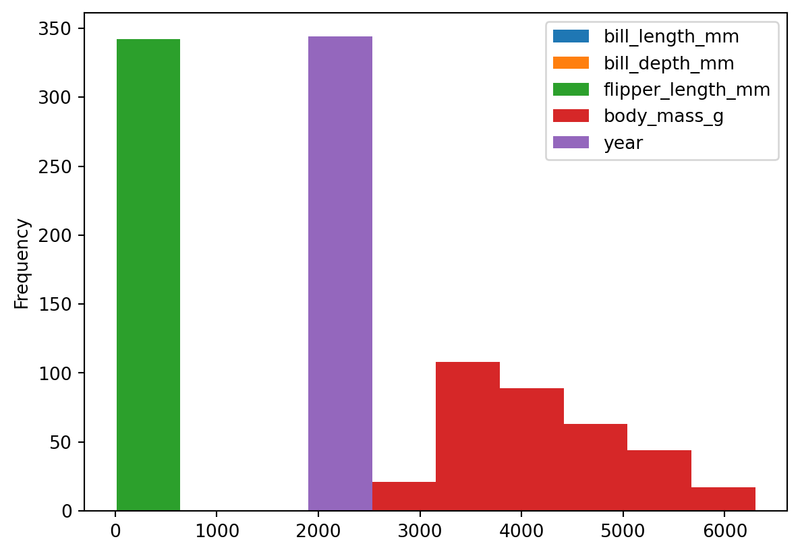

Let’s dip our toes into plotting to make things more interesting.
To get us started, we will use again the simplified data (glacial_loss.csv) from the National Snow and Ice Data Center (Original dataset). The column descriptions are:
year: calendar year
europe - antarctica: change in glacial volume (km3 ) in each region that year
global_glacial_volume_change: cumulative global glacial volume change (km3), starting in 1961
annual_sea_level_rise: annual rise in sea level (mm)
cumulative_sea_level_rise: cumulative rise in sea level (mm) since 1961
import pandas as pd# read in filedf = pd.read_csv('data/lesson-1/glacial_loss.csv')# see the first five rowsdf.head()
year
europe
arctic
alaska
asia
north_america
south_america
antarctica
global_glacial_volume_change
annual_sea_level_rise
cumulative_sea_level_rise
0
1961
-5.128903
-108.382987
-18.721190
-32.350759
-14.359007
-4.739367
-35.116389
-220.823515
0.610010
0.610010
1
1962
5.576282
-173.252450
-24.324790
-4.675440
-2.161842
-13.694367
-78.222887
-514.269862
0.810625
1.420635
2
1963
-10.123105
-0.423751
-2.047567
-3.027298
-27.535881
3.419633
3.765109
-550.575640
0.100292
1.520927
3
1964
-4.508358
20.070148
0.477800
-18.675385
-2.248286
20.732633
14.853096
-519.589859
-0.085596
1.435331
4
1965
10.629385
43.695389
-0.115332
-18.414602
-19.398765
6.862102
22.793484
-473.112003
-0.128392
1.306939
3.1plot() method
A pandas.DataFrame has a built-in method plot() for plotting. When we call it without specifying any other parameters plot() creates one line plot for each of the columns with numeric data.
# one line plot per column with numeric data - a messdf.plot()
<AxesSubplot:>

As we can see, this doesn’t make any sense! In particular, look at the x-axis. The default for plot is to use the values of the index as the x-axis values. Let’s see some examples about how to improve this situation.
3.2 Line plots
We can make a line plot of one column against another by using the following syntax:
df.plot(x='x_values_column', y='y_values_column')
For example,
# change in glacial volume per year in Europedf.plot(x='year', y='europe')
<AxesSubplot:xlabel='year'>

We can do some basic customization specifying other arguments of the plot function. Some basic ones are:
title: Title to use for the plot.
xlabel: Name to use for the xlabel on x-axis
ylabel: Name to use for the ylabel on y-axis
color: change the color of our plot
In action:
df.plot(x='year', y='europe', title='Change in glacial volume per year in Europe', xlabel='Year', ylabel='Change in glacial volume (km3)', color='green' )
<AxesSubplot:title={'center':'Change in glacial volume per year in Europe'}, xlabel='Year', ylabel='\u200bChange in glacial volume (km3\u200b)'>
Let’s say we want to graph the change in glacial volume in the Arctic and Alaska. We can do it by updating these arguments:
y : a list of column names that will be plotted against x
color: specify the color of each column’s line with a dictionary {'col_1' : 'color_1', 'col_2':'color_2}
df.plot(x='year', y=['arctic', 'alaska'], title ='Change in glacial volume per year in Alaska and the Arctic', xlabel='Year', ylabel='Change in glacial volume (km3)', color = {'arctic':'#F48FB1','alaska': '#AB47BC' } )
<AxesSubplot:title={'center':'Change in glacial volume per year in Alaska and the Arctic'}, xlabel='Year', ylabel='\u200bChange in glacial volume (km3\u200b)'>

Notice that for specifying the colors we used a HEX code, this gives us more control over the looks of our graph.
We can also create separate plots for each column by setting the subset to True.
df.plot(x='year', y=['arctic', 'alaska'], title ='Change in glacial volume per year in Alaska and the Arctic', xlabel='Year', ylabel='Change in glacial volume (km3)', color = {'arctic':'#F48FB1','alaska': '#AB47BC' }, subplots=True )
array([<AxesSubplot:xlabel='Year', ylabel='\u200bChange in glacial volume (km3\u200b)'>,
<AxesSubplot:xlabel='Year', ylabel='\u200bChange in glacial volume (km3\u200b)'>],
dtype=object)
3.2.2 Check-in
Plot a graph of the annual sea level rise with respect to the years.
What information is the columns variable is retrieving from the data frame? Describe in a sentence what is being plotted.
We will move on to another dataset for the rest of the lecture. The great…
3.3 Palmer penguins dataset
For the next plots we will use the Palmer Penguins dataset (Horst et al., 2020). This contains size measurements for three penguin species in the Palmer Archipelago, Antarctica.
The Palmer penguins dataset has the following columns:
species:
island:
bill_length_mm:
bill_depth_mm:
flipper_lenght_mm:
body_mass_g:
sex_year:
Let’s start by reading in the data.
# read in datapenguins = pd.read_csv('https://raw.githubusercontent.com/allisonhorst/palmerpenguins/main/inst/extdata/penguins.csv')# look at dataframe's headpenguins.head()
species
island
bill_length_mm
bill_depth_mm
flipper_length_mm
body_mass_g
sex
year
0
Adelie
Torgersen
39.1
18.7
181.0
3750.0
male
2007
1
Adelie
Torgersen
39.5
17.4
186.0
3800.0
female
2007
2
Adelie
Torgersen
40.3
18.0
195.0
3250.0
female
2007
3
Adelie
Torgersen
NaN
NaN
NaN
NaN
NaN
2007
4
Adelie
Torgersen
36.7
19.3
193.0
3450.0
female
2007
# check column data types and NA valuespenguins.info()
We talked about how the plot() function creates by default a line plot. The parameter that controls this behaviour is plot()’s kind parameter. By changing the value of kind we can create different kinds of plots. Let’s look at the documentation to see what these values are:
penguins.plot(kind='scatter', x='flipper_length_mm', y='body_mass_g', title='Flipper length and body mass for Palmer penguins', xlabel='Flipper length (mm)', ylabel='Body mass (g)', color='#ff3b01', alpha=0.4# controls transparency )
<AxesSubplot:title={'center':'Flipper length and body mass for Palmer penguins'}, xlabel='Flipper length (mm)', ylabel='Body mass (g)'>

3.6 Histograms
We can create a histogram of our data setting kind='hist' in plot().
# using plot without subsetting data - a mess againpenguins.plot(kind='hist')
<AxesSubplot:ylabel='Frequency'>

To gain actual information, let’s subset the data before plotting it. For example, suppose we want to look at the distribution of flipper length. We could do it in this way:
# distribution of flipper length measurements# first select data, then plotpenguins.flipper_length_mm.plot(kind='hist', title='Penguin flipper lengths', xlabel='Flipper length (mm)', grid=True)
Select data and find a value for the kind parameter that gives you a boxplot to make a basic boxplot for the penguin’s bill length and depth on the same axis.
Create a histogram of the flipper length of female gentoo penguins. HINT: you need to select both rows and columns.
3.7 Grouping
Our penguins data is naturally split into different groups: there are three different species, two sexes and three islands. Often, we want to calcualte a certain statistic for each group. For example, suppose we want to calculate the average flipper length per species. How would we do this by hand?
We start with our data and notice there are multiple species in the species column.
We split our original table to group all observations from the same species together.
We calculate the average flipper length for each of the groups we form.
Then we combine the values for average flipper length per species into a single table.
This is known as the Split-Apply-Combine strategy. This strategy follows the three steps we explained above:
Split: Split the data into logical groups (e.g. species, sex, island, etc.)
Apply: Calculate some summary statistic on each group (e.g. average flipper length by species, number of individuals per island, body mass by sex, etc.)
Combine: Combine the statistic calculated on each group back together.
In Python we can use the groupby() method to split (i.e. group) the data into different categories. The general syntax for groupby() is
df.groupby(columns_to_group_by)
where most often we will have columns_to_group_by = a single column name (string) or a list of column names
Let’s see an example:
# average flipper length per speciesavg_flipper = penguins.groupby("species").flipper_length_mm.mean()
There’s a lot going on there, let’s break it down (remember the . can be read as “and then…”)
start with the penguins data frame, and then…
group the data frame by species values, and then…
select the 'flipper_length_mm' column, and then…
calculate the mean()
IMPORTANT! Because we used groupby() the mean will be calculated on each group. If we ommit groupby() we obtain the average for the whole flipper length column:
penguins.flipper_length_mm.mean()
200.91520467836258
We can sort the avg_flipper data and then graph it as a bar plot.
# sort in descending order# remember to reassign to actually update dataavg_flipper = avg_flipper.sort_values(ascending=False)# plot as a bar plotavg_flipper.plot(kind='bar', title='Average flipper length by species', ylabel='Flipper length (mm)', rot=360# rotation for ticks )
<AxesSubplot:title={'center':'Average flipper length by species'}, xlabel='species', ylabel='Flipper length (mm)'>